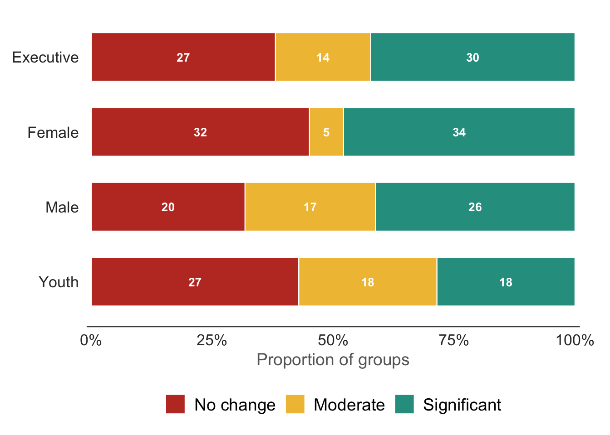
Sustainable Forest Management
Summary
Most respondents indicated that deforestation, charcoal production and fire frequency were decreasing, wildlife populations were increasing and natural resource management was improving within CFs. Most FDG groups also indicated that both deforestation and charcoal production were also decreasing outside their CF, suggesting there is no leakage effect. Community female FDGs tended to have a more positive view of the impact of CFM compared to the other groups, which is noteworthy given it is primarily the women who harvest forest products, but who often do not have voice in traditional natural resource management. However, it is also important to note that a small number of FDG groups and individual interviewees suggested the situation was worsening in their CFs. It will be important to identify CFs that are doing less well and address the problems. Not many CFMGs were practising natural forest restoration or establishing plantations. Existing CFs should be expanded and new one designed, so that they incorporate degraded areas that can become the focus of restoration and plantation activities. There is a considerable opportunity for CFM to contribute to national restoration and plantation targets, but currently this is not being realised.
Introduction
In this chapter, we consider the effect of community forestry on indicators of SFM. The information analysed is based entirely only on the responses of interviewees to our survey tool. In the next chapter we will consider the effects of CF on SMF as measured through remote sensing derived metrics.
Deforestation
We asked interviewees whether CFM has reduced deforestation inside their CF and whether or not deforestation has increased outside their CF.
Deforestation inside the community forest
A majority of groups reported either a moderate or significant reduction in deforestation inside the CF (Figure 1). Moreover, these answers were consistent across the FGD groups. There were no significant differences in response among FGD types (Table 1). However, the quality of governance, as measured by the governance index we generated in the previous chapter, was a highly significant predictor of the perceived decrease in deforestation within the CF (Table 1).
| Model results for perceived reduction in deforestation inside the CF <U+2014> FGD type and governance index | |||
| We used a CLMM model with random intercepts for province and CF within province. Reference = Executive. n = 254. | |||
| Factor | Estimate | SE | P value |
|---|---|---|---|
| Female | −0.133 | 0.354 | 0.7081 |
| Male | 0.137 | 0.351 | 0.6971 |
| Youth | −0.412 | 0.347 | 0.2355 |
| Governance index | 0.291 | 0.071 | 0.0000 |
Among the individual interviewees (Table 2), a majority of interviewees also indicated that CFM had reduced deforestation inside the CF. The differences among the interviewee roles were not significant (Table 3). However, there was a significant effect of gender. Male interviewees were significantly more likely to state that CFM had reduced deforestation (Table 3).
| Perceived reduction in deforestation inside the community forest by interviewee role | ||||
| Values represent the % of respondents in each response category. n = the total number of interview responses. | ||||
| Role | n | No change | Moderate | Significant |
|---|---|---|---|---|
| CFMG executive member | 60 | 17% | 23% | 60% |
| Community member | 29 | 28% | 24% | 48% |
| Traditional leader | 70 | 50% | 17% | 33% |
| District Forestry Officer | 51 | 22% | 51% | 27% |
| NGO representative | 30 | 20% | 40% | 40% |
| Model results for perceived reduction in deforestation inside the CF <U+2014> interviewee role, gender and age | |||
| We used a CLMM model with random intercepts for province and CF within province. Reference role = Community member; reference gender = female. n = 240. | |||
| Factor | Estimate | SE | P value |
|---|---|---|---|
| CFMG executive member | 0.075 | 0.512 | 0.8841 |
| Traditional leader | −0.943 | 0.490 | 0.0542 |
| DFO | −0.701 | 0.493 | 0.1552 |
| NGO representative | −0.225 | 0.545 | 0.6803 |
| Gender: male | 0.776 | 0.362 | 0.0320 |
| Age | −0.016 | 0.012 | 0.1878 |
Deforestation outside the community forest
Sometimes when activities are proscribed in one area they may be displaced other areas; an effect known as leakage. To investigate possible leakage effects, we also asked interviewees whether CFM had led to an increase in deforestation outside their community forest (Figure 2).
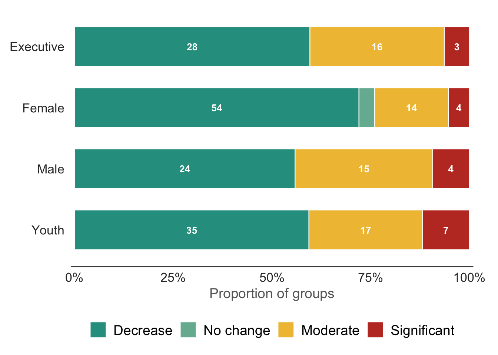
Contrary to the expectations of leakage, a majority of the FGD groups responded that CFM had actually reduced deforestation outside their CF. This result was consistent across FGD groups and the effect of governance index was not significant (Table 4). Although the effect of FGD type female was significant when compared to the baseline group (Executive FGD), the more conservative pairwise test was not significant (Table 5).
| Model results for perceived increase in deforestation outside the CF <U+2014> FGD type and governance index | |||
| We used a CLMM model with random intercepts for province and CF within province. Reference = Executive. n = 209. | |||
| Factor | Estimate | SE | P value |
|---|---|---|---|
| Female | 0.975 | 0.441 | 0.0270 |
| Male | −0.083 | 0.461 | 0.8577 |
| Youth | 0.052 | 0.426 | 0.9022 |
| Governance index | 0.073 | 0.088 | 0.4095 |
| Pairwise comparisons for perceived increase in deforestation outside the CF <U+2014> FGD type | ||||
| Tukey HSD adjustment. | ||||
| Contrast | Estimate | SE | z ratio | P value |
|---|---|---|---|---|
| Executive - Female | −0.975 | 0.441 | −2.211 | 0.1202 |
| Executive - Male | 0.083 | 0.461 | 0.179 | 0.9980 |
| Executive - Youth | −0.052 | 0.426 | −0.123 | 0.9993 |
| Female - Male | 1.058 | 0.464 | 2.281 | 0.1023 |
| Female - Youth | 0.923 | 0.419 | 2.202 | 0.1226 |
| Male - Youth | −0.135 | 0.447 | −0.302 | 0.9904 |
Among the individual interviewees (Table 6), the individuals from the communities agreed that deforestation outside their CF had decreased. However, DFOs were less likely to suggest deforestation had decreased outside the CF and more likely to suggest an increase in deforestation.
| Perceived increase in deforestation outside the community forest by interviewee role | |||||
| Values represent the % of respondents in each response category. n = the total number of interview responses. | |||||
| Role | n | Decrease | Moderate | Significant | No change |
|---|---|---|---|---|---|
| CFMG executive member | 56 | 75% | 16% | 9% | 0% |
| Community member | 28 | 50% | 39% | 11% | 0% |
| Traditional leader | 68 | 72% | 21% | 6% | 1% |
| District Forestry Officer | 40 | 25% | 52% | 20% | 2% |
| NGO representative | 23 | 39% | 48% | 13% | 0% |
The effects of the gender and age of the interviewee were not a significant determinant of their response. However, the differences in opinion between the CFMG executive members and DFOs, and between traditional leaders and DFOs, were significant (Table 7, Table 8).
| Model results for perceived increase in deforestation outside the CF <U+2014> interviewee role, gender and age | |||
| We used a CLMM model with random intercepts for province and CF within province. Reference role = Community member; reference gender = female. n = 215. | |||
| Factor | Estimate | SE | P value |
|---|---|---|---|
| CFMG executive member | 1.196 | 0.518 | 0.0211 |
| Traditional leader | 1.132 | 0.502 | 0.0241 |
| DFO | −0.833 | 0.508 | 0.1010 |
| NGO representative | −0.396 | 0.582 | 0.4968 |
| Gender: male | −0.271 | 0.398 | 0.4954 |
| Age | −0.014 | 0.013 | 0.2738 |
| Pairwise comparisons for perceived increase in deforestation outside the CF <U+2014> interviewee role | ||||
| Tukey HSD adjustment. | ||||
| Contrast | Estimate | SE | z ratio | P value |
|---|---|---|---|---|
| Community member - CFMG exec member | −1.196 | 0.518 | −2.306 | 0.1427 |
| Community member - Trad leader | −1.132 | 0.502 | −2.255 | 0.1598 |
| Community member - dfo | 0.833 | 0.508 | 1.640 | 0.4718 |
| Community member - NGO rep | 0.396 | 0.582 | 0.680 | 0.9609 |
| CFMG exec member - Trad leader | 0.064 | 0.476 | 0.134 | 0.9999 |
| CFMG exec member - dfo | 2.028 | 0.467 | 4.347 | 0.0001 |
| CFMG exec member - NGO rep | 1.591 | 0.572 | 2.783 | 0.0429 |
| Trad leader - dfo | 1.964 | 0.482 | 4.077 | 0.0004 |
| Trad leader - NGO rep | 1.527 | 0.569 | 2.685 | 0.0562 |
| dfo - NGO rep | −0.437 | 0.523 | −0.836 | 0.9194 |
Charcoal production
We asked interviewees whether CFM had reduced charcoal production inside their CF and whether it had increased immediately outside their CF.
Charcoal production inside the community forest
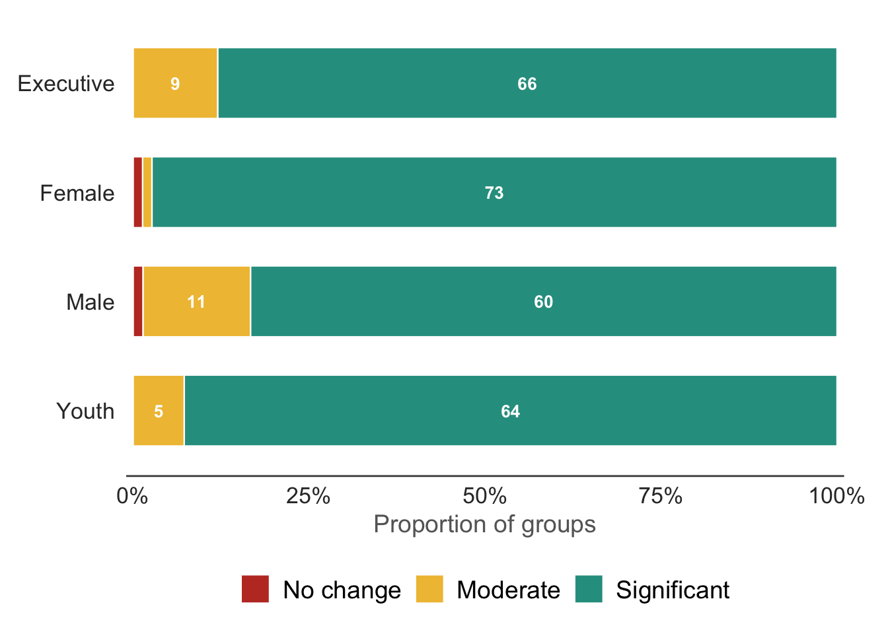
Almost all the FGD groups agreed that charcoal making inside their CF had decreased, with most indicating that charcoal making had decreased significantly (Figure 3). The small differences in responses among FGD groups were not significant (Table 9). The effect of governance index was also not significant, likely reflecting the lack of variance in responses.
| Model results for perceived reduction in charcoal production inside the CF <U+2014> FGD type and governance index | |||
| We used a CLMM model with random intercepts for province and CF within province. Reference = Executive. n = 272. | |||
| Factor | Estimate | SE | P value |
|---|---|---|---|
| Female | 1.525 | 0.826 | 0.0647 |
| Male | 0.100 | 0.569 | 0.8598 |
| Youth | 0.478 | 0.615 | 0.4366 |
| Governance index | −0.056 | 0.135 | 0.6811 |
Likewise, among the individual interviewees (Table 10), almost all interviewees agreed that there had been a substantial decrease in charcoal making inside their CF. Again, this result was consistent across interviewee roles (there were no significant differences among roles) (Table 11).
| Perceived reduction in charcoal production inside the community forest by interviewee role | ||||
| Values represent the % of respondents in each response category. n = the total number of interview responses. | ||||
| Role | n | Moderate | Significant | No change |
|---|---|---|---|---|
| CFMG executive member | 63 | 14% | 86% | 0% |
| Community member | 31 | 26% | 74% | 0% |
| Traditional leader | 74 | 11% | 86% | 3% |
| District Forestry Officer | 50 | 20% | 80% | 0% |
| NGO representative | 30 | 17% | 80% | 3% |
| Model results for perceived reduction in charcoal production inside the CF <U+2014> interviewee role, gender and age | |||
| We used a CLMM model random intercepts for province and CF within province. Reference role = Community member; reference gender = female. n = 248. | |||
| Factor | Estimate | SE | P value |
|---|---|---|---|
| CFMG executive member | 0.829 | 0.635 | 0.1919 |
| Traditional leader | 0.422 | 0.636 | 0.5074 |
| DFO | 0.006 | 0.642 | 0.9922 |
| NGO representative | 0.256 | 0.712 | 0.7195 |
| Gender: male | −0.892 | 0.604 | 0.1399 |
| Age | −0.001 | 0.016 | 0.9361 |
Charcoal production outside the community forest
To examine for the possibility of leakage, we also asked interviewees whether CFM has led to an increase in charcoal production outside their CF (Figure 4).
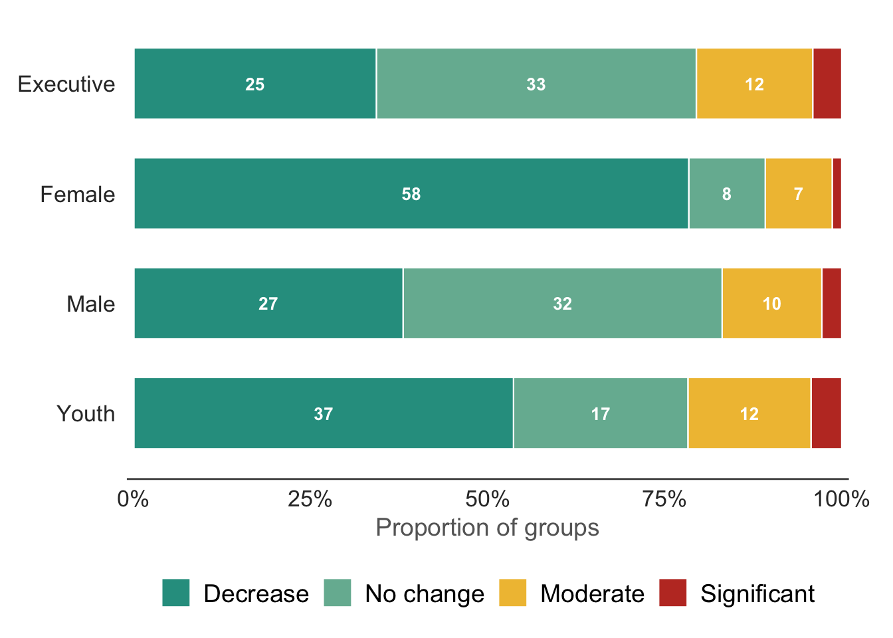
As can be seen, the vast majority of groups indicated that charcoal making had either decreased outside their CF or there was no change. However, there were a small number that indicated charcoal making had increased, with some indicating it had increased significantly. Female FGD groups were significantly more likely to indicate that charcoal making had decreased outside the CF than all other groups (CFMG executive members, male or youth community members) (Table 12; Table 13). There were no significant differences among these other groups and the effect of the governance index was also not significant.
| Model results for perceived increase in charcoal production outside the CF <U+2014> FGD type and governance index | |||
| We used a CLMM with random intercepts for province and CF within province. Reference = Executive. n = 269. | |||
| Factor | Estimate | SE | P value |
|---|---|---|---|
| Female | −1.966 | 0.400 | 0.0000 |
| Male | −0.055 | 0.320 | 0.8627 |
| Youth | −0.566 | 0.337 | 0.0931 |
| Governance index | −0.016 | 0.069 | 0.8194 |
| Pairwise comparisons for perceived increase in charcoal production outside the CF <U+2014> FGD type | ||||
| Tukey HSD adjustment. | ||||
| Contrast | Estimate | SE | z ratio | P value |
|---|---|---|---|---|
| Executive - Female | 1.966 | 0.400 | 4.919 | 0.0000 |
| Executive - Male | 0.055 | 0.320 | 0.173 | 0.9982 |
| Executive - Youth | 0.566 | 0.337 | 1.679 | 0.3346 |
| Female - Male | −1.910 | 0.409 | −4.670 | 0.0000 |
| Female - Youth | −1.400 | 0.413 | −3.387 | 0.0039 |
| Male - Youth | 0.511 | 0.346 | 1.476 | 0.4521 |
Among the individual interviewees (Table 14), similar to the results on deforestation, most community interviewees suggested there had been a decrease or no change in charcoal production outside the CF. However, NGO representatives and DFOs were significantly more likely to indicate that there had been an increase in charcoal production outside the CF (Table 15, Table 16). Interviewee age was also significant – older respondents were more likely to state that there had been an increase in charcoal production outside the CF.
| Perceived increase in charcoal production outside the community forest by interviewee role | |||||
| Values represent the % of respondents in each response category. n = the total number of interview responses. | |||||
| Role | n | Decrease | No change | Moderate | Significant |
|---|---|---|---|---|---|
| CFMG executive member | 63 | 73% | 8% | 13% | 6% |
| Community member | 30 | 73% | 7% | 20% | 0% |
| Traditional leader | 73 | 70% | 14% | 10% | 7% |
| District Forestry Officer | 45 | 40% | 20% | 27% | 13% |
| NGO representative | 30 | 50% | 17% | 30% | 3% |
| Model results for perceived increase in charcoal production outside the CF <U+2014> interviewee role, gender and age | |||
| We used a CLMM with random intercepts for province and CF within province. Reference role = Community member; reference gender = female. n = 241. | |||
| Factor | Estimate | SE | P value |
|---|---|---|---|
| CFMG executive member | 0.142 | 0.598 | 0.8121 |
| Traditional leader | −0.088 | 0.573 | 0.8775 |
| DFO | 1.847 | 0.616 | 0.0027 |
| NGO representative | 1.563 | 0.651 | 0.0164 |
| Gender: male | 0.093 | 0.386 | 0.8101 |
| Age | 0.043 | 0.014 | 0.0015 |
| Pairwise comparisons for perceived increase in charcoal production outside the CF <U+2014> interviewee role | ||||
| Tukey HSD adjustment. | ||||
| Contrast | Estimate | SE | z ratio | P value |
|---|---|---|---|---|
| Community member - CFMG exec member | −0.142 | 0.598 | −0.238 | 0.9993 |
| Community member - Trad leader | 0.088 | 0.573 | 0.154 | 0.9999 |
| Community member - dfo | −1.847 | 0.616 | −3.001 | 0.0226 |
| Community member - NGO rep | −1.563 | 0.651 | −2.401 | 0.1150 |
| CFMG exec member - Trad leader | 0.230 | 0.473 | 0.487 | 0.9886 |
| CFMG exec member - dfo | −1.705 | 0.476 | −3.582 | 0.0031 |
| CFMG exec member - NGO rep | −1.420 | 0.530 | −2.681 | 0.0567 |
| Trad leader - dfo | −1.936 | 0.497 | −3.895 | 0.0009 |
| Trad leader - NGO rep | −1.651 | 0.551 | −2.997 | 0.0228 |
| dfo - NGO rep | 0.285 | 0.477 | 0.597 | 0.9756 |
Fire
We asked interviewees about fire monitoring practices and whether CFM had reduced fire incidence inside their CF. We did not ask about changes in fire frequency outside the CF, because clearing fields for agriculture or improving grazing often involves burning.
Fire monitoring
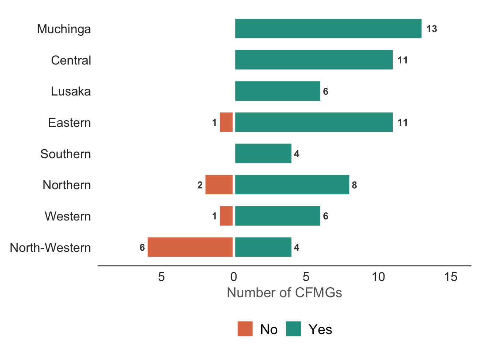
As can be seen in the figure (Figure 5), most CFMGs have instigated a system of fire monitoring. However, ten CFMGs across four provinces from our sample of 75 did not have any system of fire monitoring.
Fire incidence inside the community forest
We asked interviewees whether CFM has reduced fire incidence inside their CF (Figure 6).
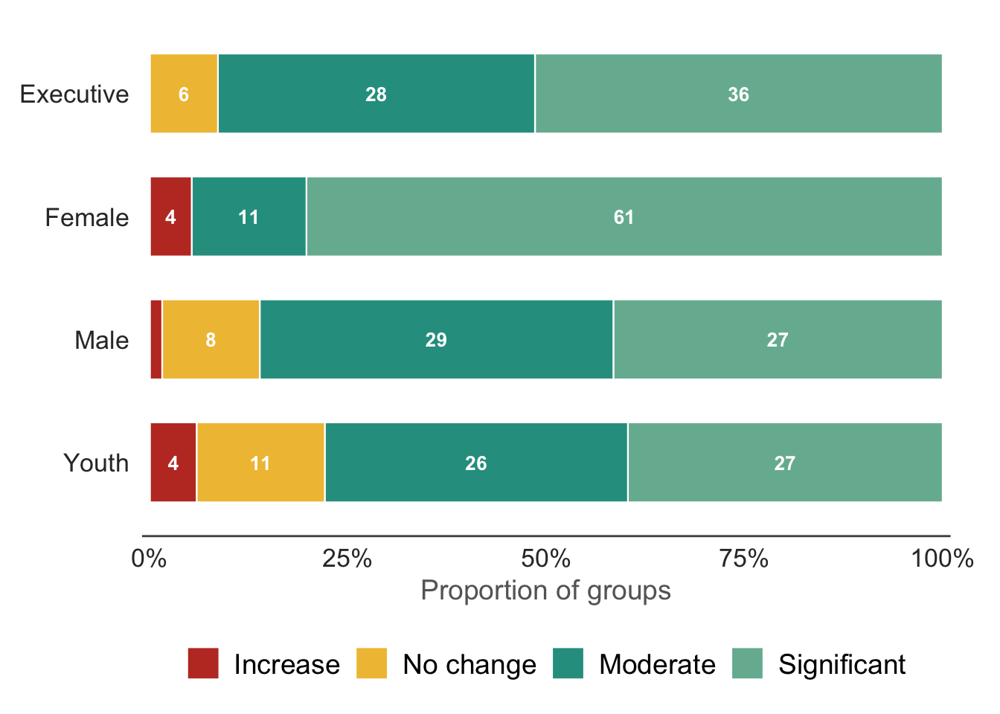
As can be seen, a majority of groups reported a moderate or significant reduction in fire incidence in the CF. Female FDGs reported more significant declines in fire frequency compared to the other groups (Table 17). These differences between female FDG groups and the other FDG groups (CFMG Executives, male and youth) were significant (Table 18). The effect of governance index was also significant, indicating that CFs with higher governance scores had greater perceived declines in fire incidence.
| Model results for perceived reduction in fire incidence inside the CF <U+2014> FGD type and governance index | |||
| We use a CLMM with random intercepts for province and CF within province. Reference = Executive. n = 261. | |||
| Factor | Estimate | SE | P value |
|---|---|---|---|
| Female | 1.632 | 0.432 | 0.0002 |
| Male | −0.460 | 0.360 | 0.2010 |
| Youth | −0.717 | 0.351 | 0.0410 |
| Governance index | 0.167 | 0.082 | 0.0422 |
| Pairwise comparisons for perceived reduction in fire incidence inside the CF <U+2014> FGD type | ||||
| Tukey HSD adjustment. | ||||
| Contrast | Estimate | SE | z ratio | P value |
|---|---|---|---|---|
| Executive - Female | −1.632 | 0.432 | −3.778 | 0.0009 |
| Executive - Male | 0.460 | 0.360 | 1.279 | 0.5765 |
| Executive - Youth | 0.717 | 0.351 | 2.044 | 0.1721 |
| Female - Male | 2.092 | 0.451 | 4.640 | 0.0000 |
| Female - Youth | 2.349 | 0.443 | 5.302 | 0.0000 |
| Male - Youth | 0.257 | 0.361 | 0.711 | 0.8928 |
Among the individual interviewees, there were also some differences in opinion (Table 19). However, these differences were not significant (Table 20). The effects of interviewee gender and age were also not significant.
| Perceived reduction in fire incidence inside the community forest by interviewee role | |||||
| Values represent the % of respondents in each response category. n = the total number of interview responses. | |||||
| Role | n | Significant | Moderate | No change | Increase |
|---|---|---|---|---|---|
| CFMG executive member | 63 | 73% | 27% | 0% | 0% |
| Community member | 30 | 67% | 27% | 3% | 3% |
| Traditional leader | 75 | 63% | 24% | 4% | 9% |
| District Forestry Officer | 54 | 44% | 39% | 17% | 0% |
| NGO representative | 31 | 45% | 45% | 3% | 6% |
| Model results for perceived reduction in fire incidence inside the CF <U+2014> interviewee role, gender and age | |||
| CLMM; random intercepts for province and CF within province. Reference role = Community member; reference gender = female. n = 253. | |||
| Factor | Estimate | SE | P value |
|---|---|---|---|
| CFMG executive member | 0.341 | 0.514 | 0.5073 |
| Traditional leader | −0.266 | 0.514 | 0.6047 |
| DFO | −0.613 | 0.520 | 0.2382 |
| NGO representative | −0.669 | 0.562 | 0.2340 |
| Gender: male | −0.609 | 0.381 | 0.1104 |
| Age | 0.010 | 0.012 | 0.4079 |
Wildlife
We asked interviewees whether CFM had led to an increase in wildlife inside their CF (Figure 7).
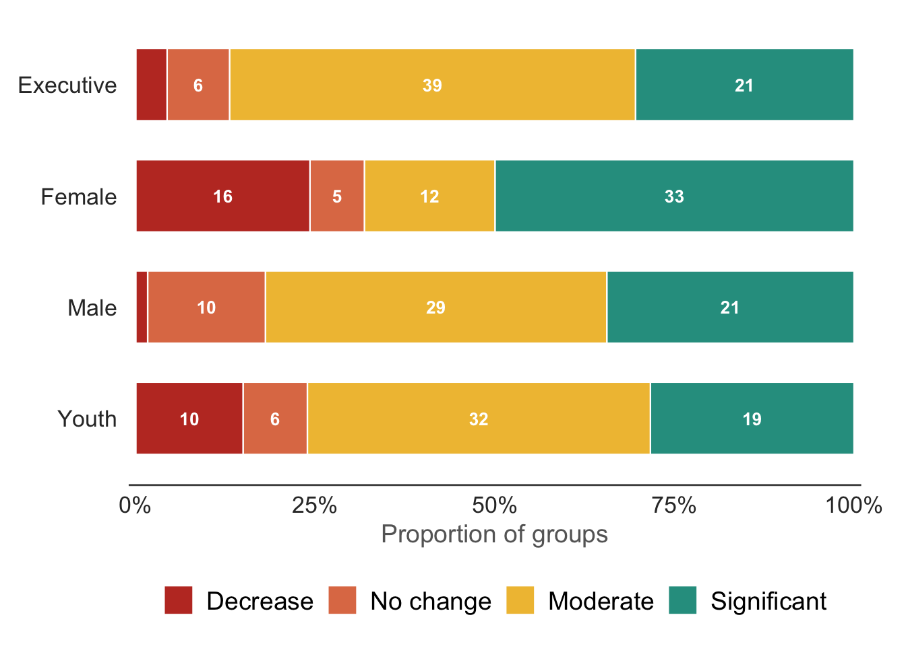
As can be seen, a majority of groups indicated a significant or moderate increase in wildlife in their CF. However, there were some that indicated there had been a decrease. The responses among FGD types were not significantly different (Table 21). The effect of governance index was also not significant.
| Model results for perceived increase in wildlife inside the CF <U+2014> FGD type and governance index | |||
| We used a CLMM with random intercepts for province and CF within province. Reference = Executive. n = 244. | |||
| Factor | Estimate | SE | P value |
|---|---|---|---|
| Female | −0.141 | 0.391 | 0.7189 |
| Male | −0.174 | 0.377 | 0.6442 |
| Youth | −0.382 | 0.358 | 0.2862 |
| Governance index | −0.031 | 0.108 | 0.7724 |
Among the individual interviewees (Table 22), there were also some differences in opinion, but again these differences were not significant (Table 23). The effects of interviewee gender and age were also not significant.
| Perceived increase in wildlife by interviewee role | |||||
| Values represent the % of respondents in each response category. n = the total number of interview responses. | |||||
| Role | n | Decrease | No change | Moderate | Significant |
|---|---|---|---|---|---|
| CFMG executive member | 61 | 10% | 3% | 43% | 44% |
| Community member | 27 | 22% | 15% | 30% | 33% |
| Traditional leader | 73 | 19% | 11% | 34% | 36% |
| District Forestry Officer | 37 | 14% | 24% | 43% | 19% |
| NGO representative | 31 | 3% | 10% | 48% | 39% |
| Model results for perceived increase in wildlife inside the CF <U+2014> interviewee role, gender and age | |||
| We used a CLMM with random intercepts for province and CF within province. Reference role = Community member; reference gender = female. n = 229. | |||
| Factor | Estimate | SE | P value |
|---|---|---|---|
| CFMG executive member | 0.438 | 0.536 | 0.4135 |
| Traditional leader | 0.105 | 0.523 | 0.8408 |
| DFO | −0.499 | 0.563 | 0.3753 |
| NGO representative | 0.741 | 0.586 | 0.2062 |
| Gender: male | −0.663 | 0.391 | 0.0899 |
| Age | 0.007 | 0.013 | 0.6022 |
Forest resources management
We asked interviewees whether CFM had improved the management of forest resources inside their CF (Figure 8).
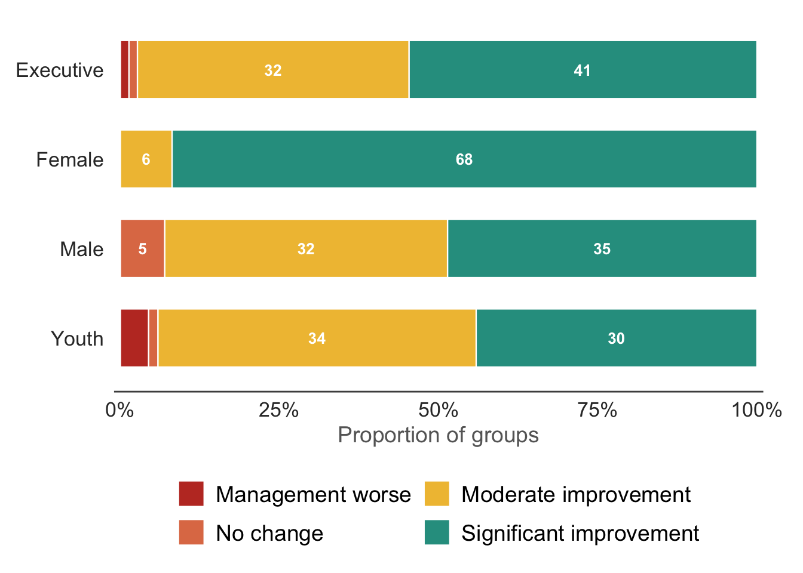
As can be seen, while responses vary among FGD groups, most groups agreed that the management of forest resources had improved moderately or significantly under CFM, and only a small number of primarily youth groups considered that it had gotten worse. A very high proportion of community female FDG groups considered that the management of forest resources was significantly better under CFM, a difference that was statistically significant (Table 24, Table 25). The effect of governance index was also significant.
| Model results for perceived improvement in forest resources management <U+2014> FGD type and governance index | |||
| We used a CLMM with random intercepts for province and CF within province. Reference = Executive. n = 270. | |||
| Factor | Estimate | SE | P value |
|---|---|---|---|
| Female | 3.379 | 0.678 | 0.0000 |
| Male | −0.156 | 0.389 | 0.6873 |
| Youth | −0.650 | 0.387 | 0.0932 |
| Governance index | 0.253 | 0.110 | 0.0217 |
| Pairwise comparisons for perceived improvement in forest resources management <U+2014> FGD type | ||||
| Tukey HSD adjustment. | ||||
| Contrast | Estimate | SE | z ratio | P value |
|---|---|---|---|---|
| Executive - Female | −3.379 | 0.678 | −4.987 | 0.0000 |
| Executive - Male | 0.156 | 0.389 | 0.403 | 0.9779 |
| Executive - Youth | 0.650 | 0.387 | 1.679 | 0.3348 |
| Female - Male | 3.535 | 0.687 | 5.144 | 0.0000 |
| Female - Youth | 4.029 | 0.704 | 5.722 | 0.0000 |
| Male - Youth | 0.494 | 0.400 | 1.233 | 0.6055 |
We also asked which specific forest resources had improved under CFM (Figure 9).
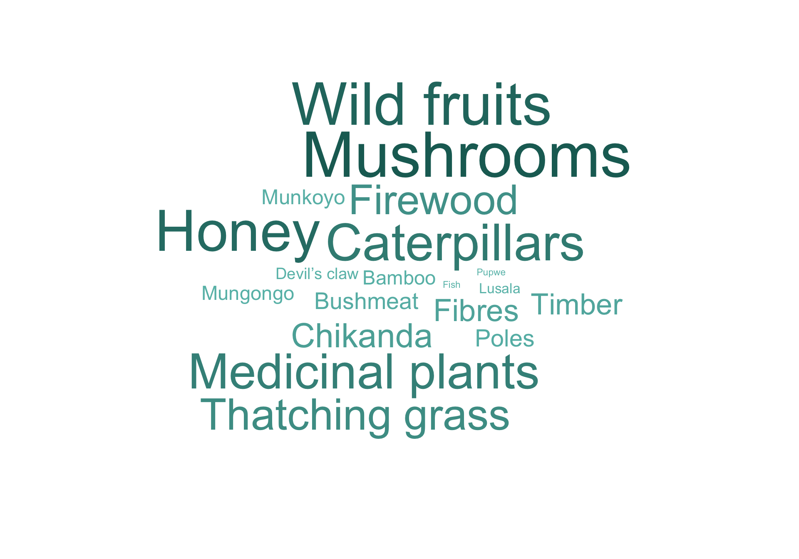
Among the individual interviewees (Table 26), the vast majority of interviewees considered that the management of forest resources had improved under CFM. There was a significant difference in responses between community members and DFOs. The DFOs were more likely to suggest there had been no change or only a moderate improvement in forest resource management under CFM, compared to the much higher proportion of community members, CFMG executive members or traditional leaders indicating a substantial improvement in forest resources management (Table 27, Table 28). Interestingly, male interviewees were significantly less likely to perceive improvements in forest resources management (Table 27).
| Perceived improvement in forest resources management by interviewee role | |||||
| Values represent the % of respondents in each response category. n = the total number of interview responses. | |||||
| Role | n | Management worse | No change | Moderate improvement | Significant improvement |
|---|---|---|---|---|---|
| CFMG executive member | 63 | 0% | 0% | 29% | 71% |
| Community member | 31 | 3% | 0% | 32% | 65% |
| Traditional leader | 75 | 7% | 5% | 31% | 57% |
| District Forestry Officer | 55 | 4% | 11% | 55% | 31% |
| NGO representative | 31 | 0% | 0% | 42% | 58% |
| Model results for perceived improvement in forest resources management <U+2014> interviewee role, gender and age | |||
| We use a CLMM with random intercepts for province and CF within province. Reference role = Community member; reference gender = female. n = 255. | |||
| Factor | Estimate | SE | P value |
|---|---|---|---|
| CFMG executive member | 0.075 | 0.595 | 0.8998 |
| Traditional leader | −0.491 | 0.561 | 0.3813 |
| DFO | −1.902 | 0.593 | 0.0013 |
| NGO representative | −0.695 | 0.653 | 0.2869 |
| Gender: male | −2.333 | 0.538 | 0.0000 |
| Age | −0.009 | 0.014 | 0.5118 |
| Pairwise comparisons for perceived improvement in forest resources management <U+2014> interviewee role | ||||
| Tukey HSD adjustment. | ||||
| Contrast | Estimate | SE | z ratio | P value |
|---|---|---|---|---|
| Community member - CFMG exec member | −0.075 | 0.595 | −0.126 | 0.9999 |
| Community member - Trad leader | 0.491 | 0.561 | 0.875 | 0.9060 |
| Community member - dfo | 1.902 | 0.593 | 3.207 | 0.0117 |
| Community member - NGO rep | 0.695 | 0.653 | 1.065 | 0.8246 |
| CFMG exec member - Trad leader | 0.566 | 0.473 | 1.197 | 0.7534 |
| CFMG exec member - dfo | 1.977 | 0.484 | 4.088 | 0.0004 |
| CFMG exec member - NGO rep | 0.770 | 0.564 | 1.365 | 0.6503 |
| Trad leader - dfo | 1.411 | 0.476 | 2.967 | 0.0250 |
| Trad leader - NGO rep | 0.204 | 0.563 | 0.363 | 0.9963 |
| dfo - NGO rep | −1.207 | 0.515 | −2.344 | 0.1311 |
Restoration
We asked CFMG executives whether natural forest restoration is practised inside the community forest (Figure 10). We restrict the responses for this question to CFMG executives, because this is the group that should be best informed about the activities of the CFMG (and the differences in responses among groups to this question are no of substantive interest).
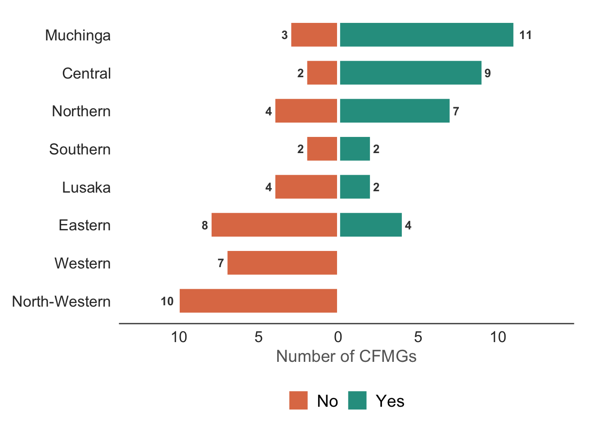
Natural forest restoration is being practiced across approximately half of the CFs in our sample, mostly in Muchinga, Central and Northern provinces. We also asked CFMG executives about the specific restoration methods applied inside their CF (Figure 11). The majority were protecting natural regeneration. Only one CFMG was involved in planting native species and removal of invasives was not practised.
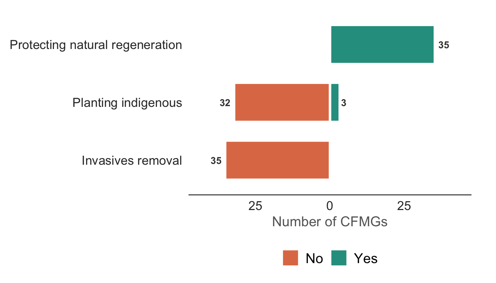
Plantations
In addition, we asked CFMG executives whether any plantations has been established inside the CF (Figure 12). Only seven out the the 75 CFs were practicing any plantation establishment.
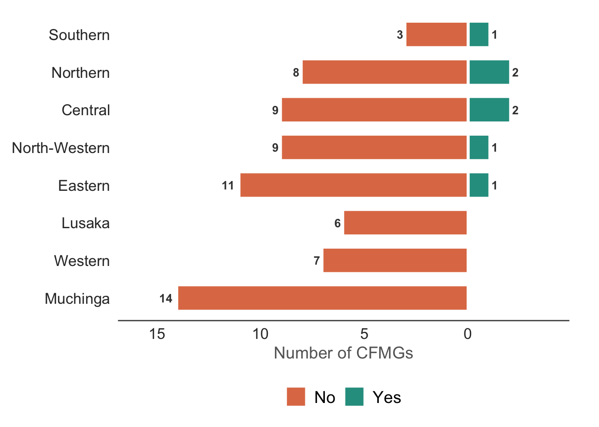
We also asked executives to estimate the number of hectares planted in the plantation. A small number (~9% of the sample) had established tree plantation inside their CF. However, the hectares planted were few (Figure 13).
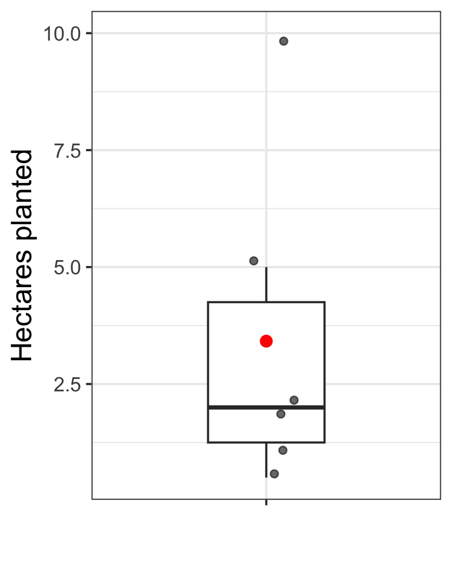
Agroforestry
Last, we asked CFMG executives whether CFM has involved introducing agroforestry practices (Figure 14). In this context, agroforestry is implemented on agricultural land as a means for achieving sustainable intensification and reducing pressure on forests. Around 40% of CFMGs said that agroforestry had been introduced under CFM.
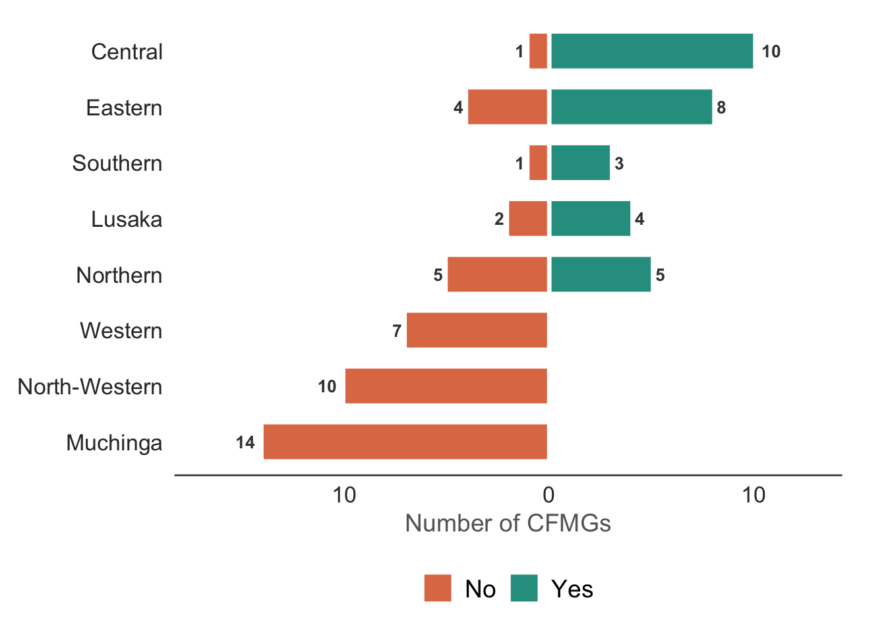
We asked CFMG executives about the types of agroforestry practices present in the community (Figure 15).
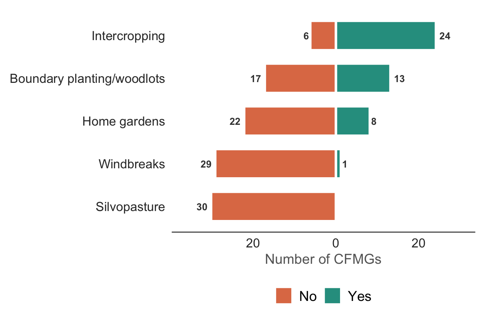
Among the 30 CFMGs practising agroforestry most were employing intercropping with leguminous shrubs for soil health management, but planting boundary trees or woodlots and homegardens were also practised.
Among the species used (Figure 16), we can see that Gliricidia and Faidherbia, leguminous shrubs and trees, respectively, that are used for intercropping were the most popular.
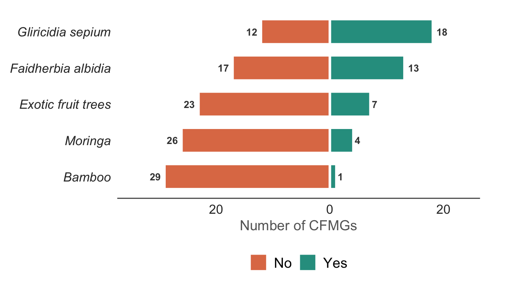
SFM index
To summarise the overall SFM performance of each CFMG, we constructed an SFM score (0–5) by summing five binary indicators of change inside the CF — decrease in deforestation, decrease in charcoal production, decrease in fire incidence, increase in wildlife, and improved natural resources management — scored as 1 (positive change reported) or 0 (no change or worsening). The distribution of SFM scores across CFMGs is shown in Figure 17. We then modelled this score using a linear mixed model with FGD type and the governance index as predictors, and random intercepts for province and CF within province, to test whether governance and FGD type were significant predictors of overall SFM performance (Table 29, Figure 18).
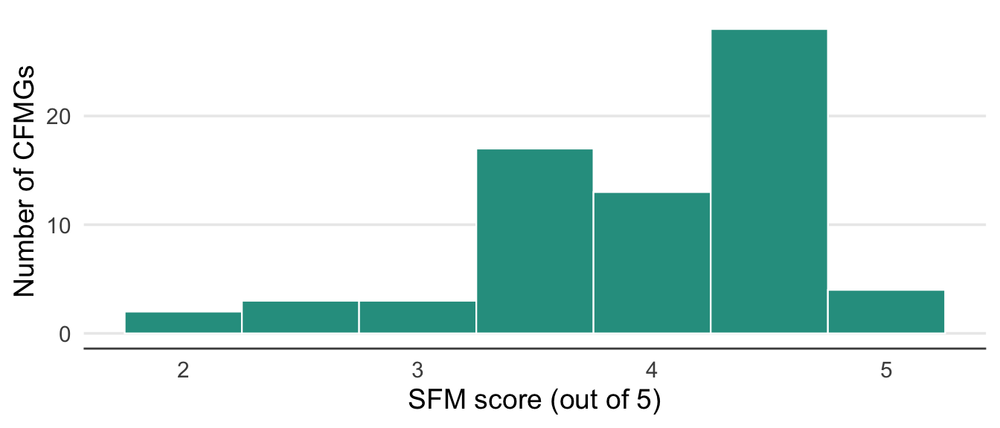
| Model results for SFM performance <U+2014> FGD type and governance index | |||
| Linear mixed model with random intercepts for province and CF within province. Reference = Executive. Province variance = 0.101; CF-within-province variance = 0.127; residual variance = 0.692. Marginal R<U+00B2> = 0.069; conditional R<U+00B2> = 0.3. n = 273. | |||
| Factor | Estimate | SE | P value |
|---|---|---|---|
| Intercept | 3.682 | 0.217 | 0.0000 |
| Female | −0.215 | 0.140 | 0.1249 |
| Male | −0.113 | 0.142 | 0.4303 |
| Youth | −0.201 | 0.141 | 0.1550 |
| Governance index | 0.115 | 0.034 | 0.0011 |
As can be seen from the table of model results, FGD type did not have any significant effect on the SFM index. However, the governance index had a highly significant effect. Thus, CFs with higher governance index scores (i.e. those that are better governed) had better outcomes for SFM.
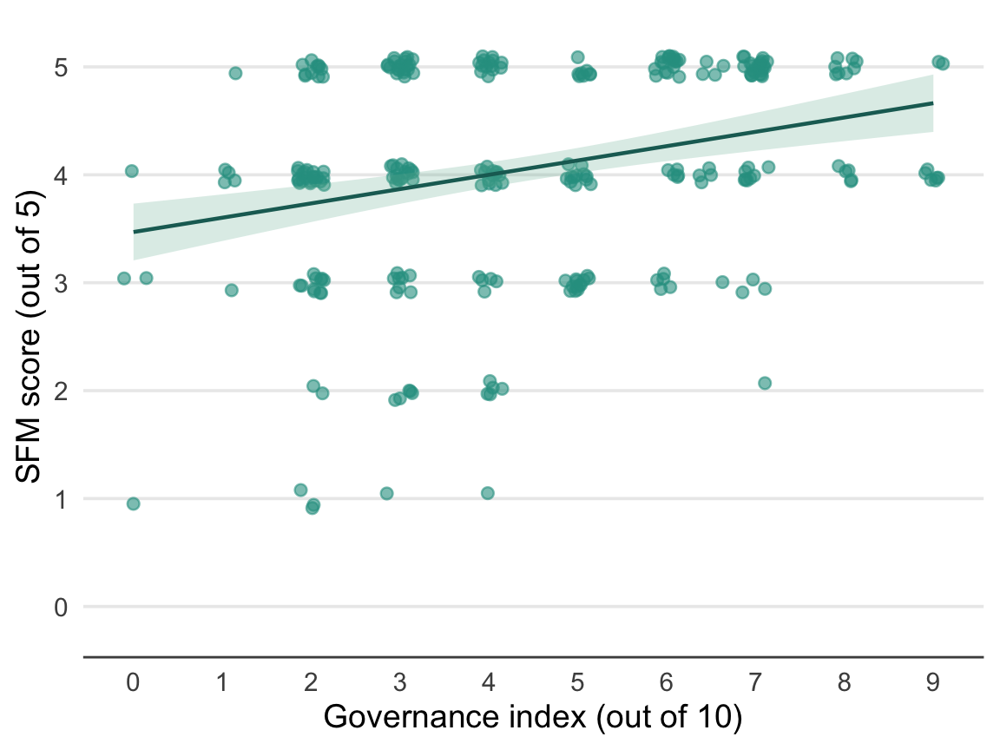
Discussion
All the indicators of SFM point to a situation that is improving under CFM, including deforestation, charcoal production, fire frequency, wildlife abundance and natural resource management. Interestingly, there does not appear to be any indication of leakage for most CFs. Most FDG groups indicated that both deforestation and charcoal production were also decreasing outside their CF. There were some differences in responses among the different FDG groups, with community female FDGs tending to have a more positive view of the impact of CFM compared to the other groups. This is interesting and may indicate that under CFM females have more of a voice in forest and forest resource management. Traditionally, women are highly dependent on forest resources, but usually have little say in forest management decisions. It would be worth following up this study to investigate what is driving this positive take on CFM among community women.
Among the individual interviewees, NGO representatives and DFOs tended to have a somewhat more conservative view with respect to positive changes, as compared to individuals from the communities. This may reflect that these professionals have a broader perspective from which to understand changes in forest and forest resource management. However, it could also arise from the fact that they are not as intimately involved in the forest management and hence less aware of the changes. Ultimately, monitoring over a longer period will enable better understanding of how CFM is changing forest management.
Overall, CFM appears to be engendering a change towards improved SFM. However, it is important to note that a small number of FDG groups and individual interviewees suggested the situation was worsening in their CFs. For the success of CFM in Zambia, it will be important to identify CFs that are doing less well, diagnose the causes and implement changes.
Some CFMGs were practicing forest restoration, mostly through protecting natural regeneration, and a few were establishing plantations. However, these activities were not widespread among CFMGs. Restoration - especially through protection of natural regeneration - should integral to CFM and could be implement across all CFs in Zambia. As this is an important indicator of SFM and there are government targets to restore 2,000,000 ha by 2030, the FD should integrate restoration targets into forest management plans for CFMGs and monitor outcomes. A problem is that the boundaries of many existing CFs were drawn around areas containing on relatively good forest. The FD and communities should consider expand CF boundaries to incorporate areas for restoration activities, and for new CFs such areas should be incorporated from the outset. Agroforestry was also not widely practised by CFMGs, but is recognised tool for restoration of degraded agricultural land and can reduce pressure on forests. Plantations are also an important opportunity for CFM. Plantations can supply local building and fuelwood needs, thereby reducing pressure on natural forests. Through sustainable charcoal programmes, they can also supply energy for urban dwellers and again reduce pressure on natural forests. Last, Zambia has an acute shortage of high quality timber for uses such as telegraph poles and construction and imports large amounts of wood. A focus on developing plantations through CFM would go some way to meeting these needs, as well as generating a valuable additional source of income for rural communities.
In conclusion, our data suggest that CFM in Zambia is driving substantial improvements in SFM, reducing deforestation, charcoal production, and fire frequency, increasing wildlife populations, and improving natural resource management. However, it is important to note that these changes were not ubiquitous across all CFs. While some CFMGs are practising restoration and establishing plantations, there is a substantial opportunity to expand the role of CFM in meeting national restoration and plantation targets.